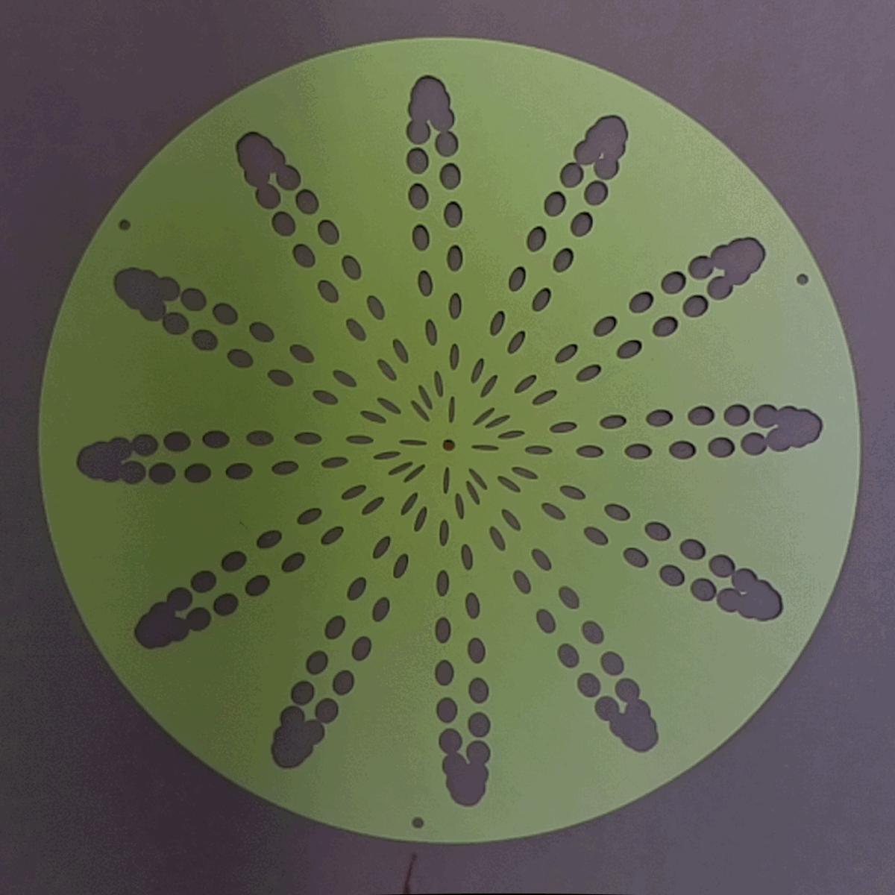

phenakistoscope day 8
last edited: 2022.09.15
Another day another gif :) Cut and photographed the design made yesterday.

follow the leader
reflections & notes
This one was only 3 frames, which was fun after putting 20 frames together. Kinda feels like
code golf in trying to get more complicated
patterns out of a few frames. My first gif put together was on a white background, and the phenakistoscope
paper was slightly bent, and it ended up looking bad with the shadow cast on the paper. If I want to keep
some of these long terms, it could be good to cut things out of a thicker stock.